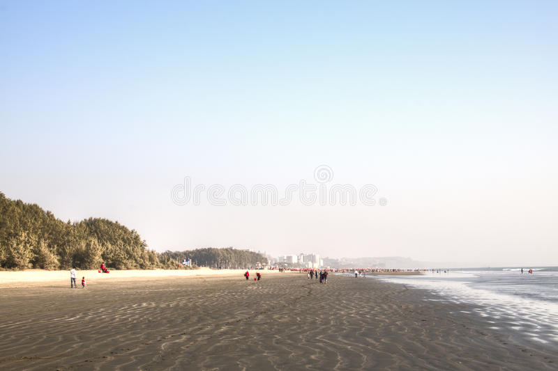
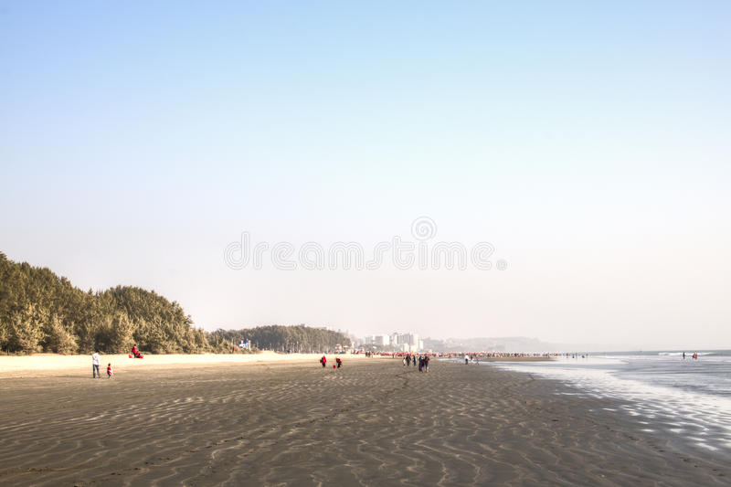

কক্সবাজার সমুদ্র সৈকত বাংলাদেশের কক্সবাজার জেলায় অবস্থিত একটি সৈকত।
১২০ কিলোমিটার (৭৫ মাইল) দীর্ঘ এই সৈকত পৃথিবীর দীর্ঘতম প্রাকৃতিক সমুদ্র সৈকত।
কক্সবাজার সমুদ্র সৈকতটি পৃথিবীর দীর্ঘতম অখন্ডিত সমুদ্র সৈকত।
এ সমুদ্র সৈকতের বৈশিষ্ট্য হলো পুরো সমুদ্র সৈকতটি বালুকাময়, কাদার অস্তিত্ব পাওয়া যায় না।
বালিয়াড়ি সৈকত সংলগ্ন শামুক-ঝিনুকসহ নানা প্রজাতির প্রবাল সমৃদ্ধ বিপণি বিতান,
অত্যাধুনিক হোটেল-মোটেল-কটেজ, নিত্য নবসাজে সজ্জিত বার্মিজ মার্কেট সমূহে
পর্যটকদের বিচরণে কক্সবাজার শহরে পর্যটন মৌসুমে প্রাণচাঞ্চল্য থাকে।
কক্সবাজার সমুদ্র সৈকত একটি মায়াবী ও রূপময়ী সমুদ্র সৈকত।
প্রতিদিন প্রতিক্ষণ এর রূপ পরিবর্তন করে। শীত-বর্ষা-বসন্ত-গ্রীষ্ম
এমন কোনো ঋতু নেই যখন সমুদ্র সৈকতের চেহারা বদলায় না।
প্রত্যুষে এক রকম তো মধ্যাহ্নে এর রূপ অন্য রকম।
প্রতিদিন অসংখ্য দেশী-বিদেশেী পর্যটক এই সৈকতে আসেন।
A short trip to Cox's bazar sea-beach
লাবনী পয়েন্ট
বাংলাদেশের সমুদ্র সৈকত বললে প্রথমেই চোখে ভেসে ওঠে পুরাতন সি-বিচ যা লাবণী পয়েন্ট
বা পুরাতন সি-বিচ হিসেবেও পরিচিত। সমুদ্র দেখতে বাঙালি মাত্রই ছুটে যান কক্সবাজারের
এই সি-বিচে। দেশের বিভিন্ন অঞ্চল থেকে কক্সবাজারগামী বাসে করে কলাতলী সি-বিচ রোডে
নেমে রিকশা অথবা পায়ে হাঁটা পথে যেতে পারবেন এই বিচে। কক্সবাজার শহর থেকে নৈকট্যের
কারণে লাবণী বিচকে কক্সবাজারের প্রধান সমুদ্র সৈকত বলে বিবেচনা করা হয়। নানারকম
জিনিসের পসরা সাজিয়ে সৈকত সংলগ্ন এলাকায় রয়েছে ছোট বড় অনেক দোকান যা পর্যটকদের
আকর্ষণ করে। এছাড়া এখানে পর্যটকদের জন্য গড়ে উঠেছে ঝিনুক মার্কেট। সীমান্তপথে
মিয়ানমার, থাইল্যান্ড, চীন প্রভৃতি দেশ থেকে আসা বাহারি জিনিসপত্র নিয়ে গড়ে
উঠেছে এই মার্কেট গুলো।
কলাতলী পয়েন্ট
কলাতলী বিচ কক্সবাজারের আরেকটি পর্যটন আকর্ষণ কেন্দ্র। এটা কক্সবাজারের মধ্যে অবস্থিত।
বিভিন্ন বয়সের বিভিন্ন মানুষ এখানে ভ্রমণ করতে আসেন, সমুদ্রে গোসল করতে আসেন, আসেন
প্রাকৃতিক সৌন্দর্য উপভোগ করতে। কলাতলী বিচে নানা ধরনের খাবারের রেস্টুরেন্টসহ আরো অনেক
পর্যটন সুবিধা রয়েছে। বিশেষ করে চাঁদনি রাতে বিচে হাঁটা সত্যিই রোমঞ্চকর সকল বয়সী
মানুষের জন্যই। কক্সবাজারগামী সকল যানবাহন শহরের কলাতলী পয়েন্ট দিয়ে শহরে প্রবেশ করে।
সুগন্ধা পয়েন্ট
কলাতলী পয়েন্ট থেকে দূরে উত্তর দিকে সুগন্ধা পয়েন্ট অবস্থিত। এখানে অবস্থিত জনপ্রিয়
বার্মিজ মার্কেট। অতীতে এখানে অনেক সামুদ্রিক-মাছের তৈরি খাবারের রেস্টুরেন্ট ছিলো কিন্তু
সরকার পরে সেগুলো উচ্ছেদ করে, সুগন্ধা পয়েন্টে রয়েছে আরেক আকর্ষণ ঝুলন্ত রেস্টুরেন্ট।
দরিয়ানগর সৈকত
হিমছড়ি জাতীয় পার্কের কাছে দরিয়ানগর সৈকত অবস্থিত। দরিয়ানগর সৈকতের মধ্য দিয়ে জলপথপ্রবাহিত হয়ে থাকে।
প্যারাসেলিংয়ের জন্য দরিয়ানগর সৈকত জনপ্রিয়।
হিমছড়ি
কক্সবাজার সমুদ্র সৈকত থেকে মাত্র ১২ কিলোমিটার দক্ষিণে অবস্থিত হিমছড়ি পর্যটন কেন্দ্র
পাহাড়ের কোল ঘেঁষে এ সমুদ্র সৈকতের নাম হিমছড়ি। এখানকার সমুদ্র সৈকতটি কক্সবাজারের
চেয়ে অপেক্ষাকৃত নির্জন ও পরিস্কার পরিচ্ছন্ন। এর সৌন্দর্যও কোনো অংশে কম নয়। সবচাইতে
গুরুত্বপূর্ণ বিষয় হলো হিমছড়ি যত না সুন্দর তার চাইতে সুন্দর ও রোমাঞ্চকর হল কক্সবাজার
থেকে এ সৈকতে যাওয়ার পথটি। একপাশে বিস্তৃর্ণ সমুদ্রের বালুকা বেলা আর এক পাশে সবুজ
পাহাড়ের সাড়ি। মাঝে পিচ ঢালা মেরিন ড্র্রাইভ। এমন দৃশ্য সম্ভবত দেশের আর কোথাও পাওয়া
যাবে না। কেউ কক্সবাজার এলো অথচ এই পথ ধরে ছুটলো না তার পুরো ভ্রমনই মাটি। পাহাড়ে উঠলে
চোখের সামনে ভাসবে নীল দিগন্তে হারিয়ে যাওয়া বিশাল সমুদ্র। হিমছড়ির প্রধান আকর্ষণ
এখানকার ক্রিসমাস ট্রি। সম্প্রতি হিমছড়িতে গড়ে উঠেছে বেশ কিছু পর্যটন কেন্দ্র ও পিকনিক
স্পট।
ইনানী সৈকত
ইনানী সৈকত ১৮-কিলোমিটার দীর্ঘ (১১-মাইল) যা কক্সবাজার জেলার উখিয়া উপজেলায় অবস্থিত।
এটি কক্সবাজার শহর থেকে প্রায় ২৮ কি.মি দক্ষিণে অবস্থিত। এই সৈকতে রয়েছে সবুজ ও কালো
বর্ণের অনেক প্রবাল পাথর।
টেকনাফ সৈকত
কক্সবাজার জেলার টেকনাফ উপজেলায় টেকনাফ সৈকত অবস্থিত।
এই অংশটা কক্সবাজারের অন্যান্য অংশ থেকে ভিন্নতর।
গাছগাছালিতে পরিপূর্ণ টেকনাফ ম্যানগ্রোভের তীরে অবস্থিত টেকনাফ সৈকত।
এই সৈকত বিভিন্ন ভাগে বিভক্ত। উল্লেখযোগ্য ভাগগুলো হলো -